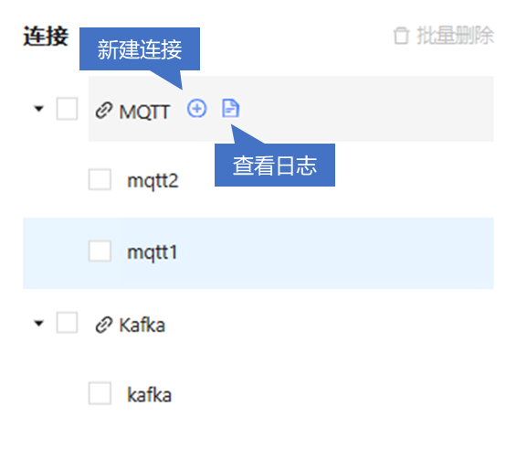
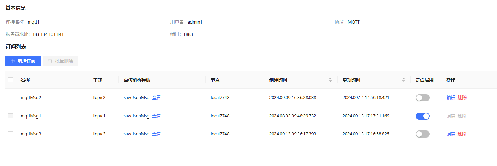
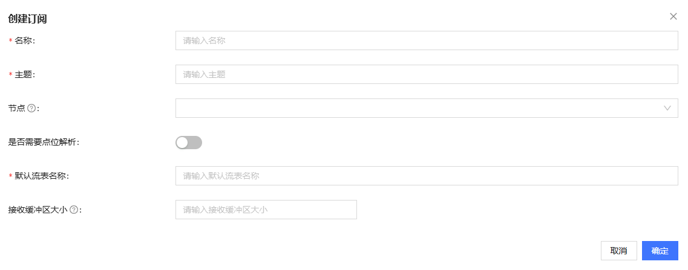
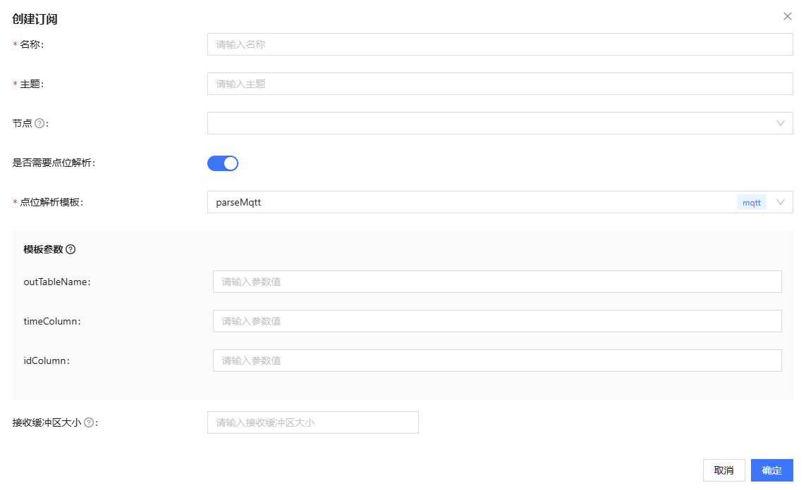
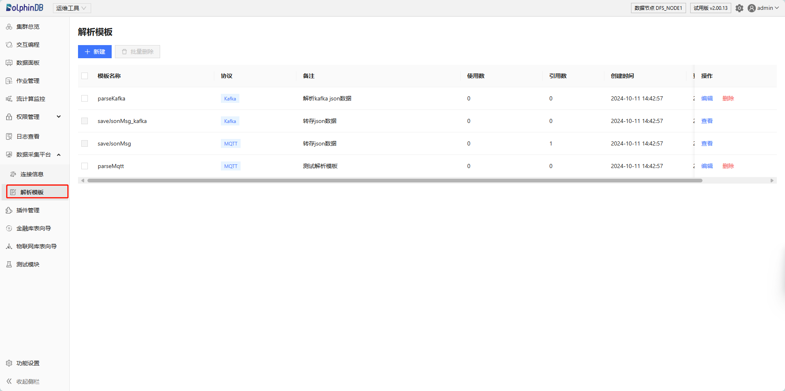

数据采集平台
数据采集平台是一款专为数据采集与管理设计的高效工具，支持 MQTT 和 Kafka 两种主流数据通信协议。得益于该平台直观易用的界面，用户能够轻松对接不同协议的测点，从而极大简化了用户的配置与管理流程，使数据采集的启动与停止变得更为快捷与高效。
用前注意
-
版本要求：数据采集要求 server 版本号不低于 2.00.14/3.00.2。
-
在使用该模块时，默认会加载插件 MQTT 和 Kafka。在集群模式中，对于需要使用采集平台的节点，建议在集群配置文件 cluster.cfg 中通过 preloadModules 参数指定这两个插件，以预加载它们。
连接信息

连接管理
连接管理模块负责 MQTT 和 Kafka 的连接信息管理，具体功能包括：
-
展示协议下所有连接。
-
新建/编辑/（批量）删除连接。
-
展示协议调试日志信息。
图 5. 图 2-2 新建连接/查看日志 
新建连接
新建 MQTT 连接
点击 MQTT 后的“新建连接”，进入创建 MQTT 协议连接页面。
填写 MQTT 协议连接基本信息：
-
连接名称：输入 MQTT 连接的名称，支持中文和英文。注意：不可与列表中已有连接重名，不可为空，不可包含空格，最大长度为 50。
-
服务器地址：输入 MQTT 服务器的 IP 地址或域名。
-
端口：输入 MQTT 服务器监听的端口号。MQTT 默认端口为 1883（非加密连接），但根据服务器的配置，可能使用其他端口。注意：有效值为 1-65535 的整数。
-
用户名/密码：输入 MQTT 服务器的用户名和密码。其中密码支持明文和暗文两种输入模式。
新建 Kafka 连接
查看调试日志

编辑/删除连接
编辑连接
点击编辑连接对应的符号，进入编辑页面，对连接信息进行修改。
删除连接
订阅管理
订阅管理模块用于管理连接下的订阅信息，具体功能包括：
-
展示连接下的所有订阅。
-
新增/编辑/（批量）删除订阅信息。
-
启用/禁用订阅。
图 12. 图 2-9 订阅管理 
订阅管理界面展示了当前连接的基本信息和具体订阅相关信息。
-
当前连接的基本信息包含连接名称， 用户名，协议，服务器地址和端口号。
-
订阅相关信息包括订阅名称，主题，点位解析模板，创建时间，更新时间，订阅是否启用和操作等。操作包含对连接信息的编辑和删除。可按照创建时间/更新时间对订阅进行排序。
新增订阅
新增 MQTT 订阅
点击新增订阅，进入创建订阅页面。
输入订阅基本信息：
-
订阅名称：输入 MQTT 连接的名称，支持中文和英文，不可与列表中已有连接重名。
-
订阅主题：输入 MQTT 服务器上的主题（Topic），MQTT 服务器会根据订阅的主题来过滤并分发消息给相应的订阅者。
-
节点：指定处理订阅消息的节点。如果未指定，则默认为当前操作的节点。在多节点环境中，此选项允许用户灵活地将消息处理任务分配给不同的节点。
-
是否需要点位解析：选择是否需要对接收到的消息进行点位解析。点位解析是指将接收到的数据按照特定的规则或模板进行解析，以提取出有用的数据点或字段，并将这些数据点或字段存储到流表中供后续处理或分析。
-
无需点位解析时（即使用默认解析模板 saveJsonMsg），仅需填入流表名称（系统将自动创建流表），系统会将订阅到的数据以完整的字符串形式存入指定的流表中，不进行 JSON 解析。
图 13. 图 2-10 无需点位解析创建订阅 
- 需要进行点位解析时，需要选择解析模板，可选自定义模板或内置模板，并填写相应模板参数。其中自定义解析模板的输出流表需要用户自行创建。
图 14. 图 2-11 需要点位解析创建订阅 
-
- 接收缓冲区大小：设置接收缓冲区的大小，以控制一次接收消息的最大数据量。如果未设置，系统将使用默认值 20480 字节。
点击确定即可完成订阅。
新增 Kafka 订阅
相较 MQTT，Kafka 订阅无需设置接收缓冲区大小，增加了分区、偏移量以及消费者参数配置项。
启用/查看/停用/编辑/删除订阅
对于启用的订阅，不能进行编辑或删除操作。通过“查看”按钮，可以进入查看页面，查看订阅的详细信息。
对停用的订阅可以进行编辑或者删除操作。已启用的订阅需先停用后才能进行编辑或删除。
点击编辑，进入修改订阅页面，对订阅信息进行修改。修改后将默认按照更新时间对订阅进行排序。
解析模板
数据解析模板管理包含功能：
-
展示所有解析模板信息，包括模板名称，协议，备注，模板的使用数和引用数，模板的创建时间和更新时间等。
-
新增/编辑/批量（删除）解析模板。
图 19. 图 3-1 解析模板页面 
DolphinDB 内置了解析模板 saveJsonMsg_Kafka 和 saveJsonMsg，用于将 JSON 数据转存至指定的流表中。
新建模板
点击新建，进入创建模板界面。填写模板名称、协议（目前仅支持 MQTT 和 Kafka 协议）、备注信息及自定义模板代码。
编辑/删除模板
用户可对已有模板进行编辑和删除操作。内置模板和已被使用的模板无法进行修改和删除。